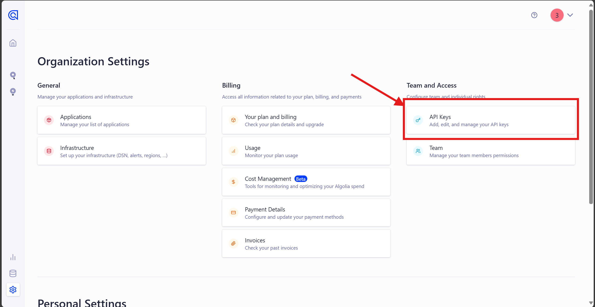
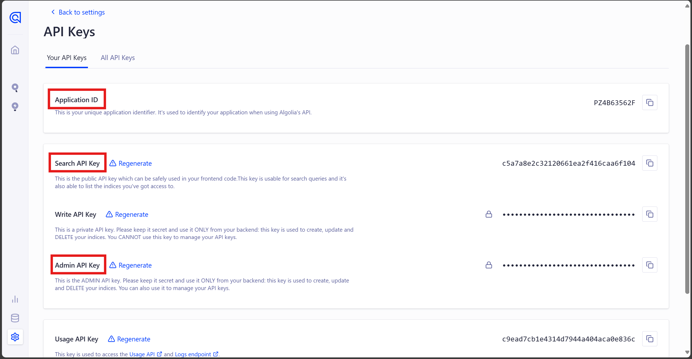
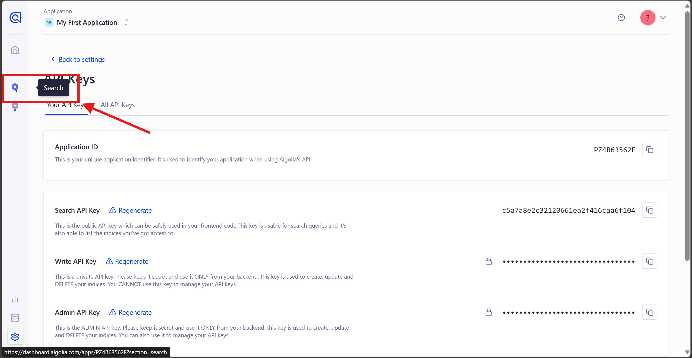

前言
使用GitHub Pages和Hexo搭建了一个自己的博客，把遇到的一些问题和对应解决方案记录一下。
这篇文章是在Hexo自动生成的文件（hello-world.md）里写的，于是就算是我的第一篇文章吧。
注：本文章所写的问题，若未特别说明，则是面向本博客使用的hexo-theme-reimu主题的，请根据情况适度参考。
问题和解决方案
由于时隔半年我再次捡起这个博客，很多问题我已经忘了，所以这里只列出我还记得的问题（好像也记不得了。。）和从今天开始遇到的问题。
hexo deploy（hexo d）部署文件到GitHub时，报错：“Error: Spawn failed”
如图：

主要报错信息如下：
1 | FATAL Something's wrong. Maybe you can find the solution here: https://hexo.io/docs/troubleshooting.html |
这个问题可能由多种原因造成，为此我结合网上的解决方案以及自身实际写了一篇单独的博客，请移步hexo deploy（hexo d）部署文件到GitHub时，报错：“Error:Spawn failed”。
使用Algolia实现搜索功能时的Algolia网站配置
网上的大多数是比较旧的教程，看起来Algolia最近有一些页面的更改。
- 在Algolia官网点击右上角的Login或者Get Start注册账号并登录，然后一些新人的调查随便填填就行。
- 之后会跳转到dashboard页面，Algolia会自动为你创建一个Application，不过需要你先选择你所在的地区。这里会发现地图中没有中国大陆的选项，不过这也无关紧要，随意选择一个即可。

- 之后填写
_config.yml中的algolia部分，所需自行填写的部分如下：
1 | algolia: |
点击左下角Settings，再点击最右侧一栏“Team and Access”的API Keys，即可进入到API Keys页面。

在这里可以看到你的ApplicationID、API Key和Admin API Key，其中API Key选择Search API Key。

这里就有我们所需要的appId、apiKey和adminApiKey了，其中apiKey选择Search API Key。
indexName一项，在当前版本下，实际上可以不用特意在Algolia网站上创建一个Index，因为在_config.yml中的algolia部分填写的indexName会自动在对应的Application创建一个Index，所以这里的indexName可以随意填写（如hexo）。
如果你想要自己手动创建，可以点击左侧边栏中的Search，之后创建一个Index，并将名称填写到indexName部分。

使用gitalk配置评论区时，页面显示：“未找到相关的 Issues 进行评论”等内容
使用gitalk配置评论区时，报错：“Error: Validation Failed”
使用giscus配置评论区时，“无法在该仓库上使用 giscus。请确保以上条件均已满足。”
giscus配置评论区需要repo-id，repo-id是在giscus官方页面上输入仓库名以及选择Discussion分类后从下方“启动giscus”标题下的<script>标签中提取的。
仓库名一般就是你的GitHub Pages所在仓库名。除了官方页面上提示的三点之外，注意在“仓库：”下方的输入框内输入的是用户名/仓库名（如Ti-FDGG/ti-fdgg.github.io），否则仍会报错：“无法在该仓库上使用 giscus。请确保以上条件均已满足。”
GitBash在非根目录下使用hexo命令也能顺利运行，但是出现文章封面、首页作者头图等部分文件索引混乱
很神奇的一件事，当初因为一些原因错误的在/e/blogs/myblog/theme文件夹下（博客根目录是/e/blogs/myblog，后面用.指代）进行了hexo clean && hexo g && hexo s以及hexo clean && hexo g && hexo d操作，运行时并未在控制台报错，但是在预览以及上传到GitHub之后的GitHub Pages页面上，由于./source/_data 文件夹中的内容（avatar文件夹、covers文件夹等）没有被正确索引，导致页面上的一些元素无法正常显示。

解决方案：切换回博客根目录（如/e/blogs/myblog），再次运行hexo clean && hexo g && hexo s或hexo clean && hexo g && hexo d，即可正常显示。
你但凡给我在控制台里报个错我也知道怎么处理啊。。大半夜的搞了一个半小时。
尚未解决的问题
无法正常使用iconfont图标以及font-awesome图标
我的插入图标方法就是在Markdown文档中写HTML代码，如：
1 | 在这里，你可以找到我常用的图标： |
但效果如下：
在这里，你可以找到我常用的图标：
- 爱心图标： 喜欢
- Twitter图标： 关注我们
- 搜索图标： 搜索内容
- 下载图标： 获取资源
- 分享图标： 分享
如果你喜欢我的博客，请用点赞！
等待后续研究。
其他功能吐槽
搜索功能
hexo-generator-search每次搜索都要按一下Enter，有点麻烦。相比之下，Algolia的搜索体验更好。